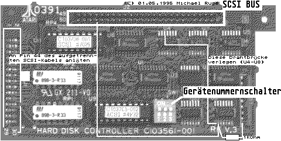

Previous
Next
TOC

In the end: The device adresses:
dip 1
dip 2
dip 3 --------- dip-switches on the hostadaptor
on
on
on
only ACSI-unit 0 (Atari default)
off
on
on
ACSI-unit 0 for the old harddisc
ACSI-unit 1 for the new harddisc
off
off
on
ACSI-unit 1 for the old harddisc
ACSI-unit 2 for the new harddisc
off
on
off
ACSI-unit 2 for the old harddisc
ACSI-unit 3 for the new harddisc
off
off
off
ACSI-unit 3 for the old harddisc
ACSI-unit 4 for the new harddisc
LIABILITY
I, Michael Ruge, (me, Frank Szymanski, too) cannot accept liability
for direct or indirect damage in financial, material or any other
way which are caused by the use of these instructions.
These instructions were produced and tested with the highest care.
I cannot estimate how this list, instructions or modifying of your
computer corresponds to your abilities. The person who carries out
the above mentioned modifications always bears responsibility. In
case of doubt let a friend or even your computer dealer do the modi-
fications. I cannot take responsibility for irregular done works
(e.g. computer is out of order) because I cannot verify if your
abilities corresponds to the demands to do the modifications in a
correct way.
Kapitel Der Hostadapter im MegaSTE und der STACY, Seite 5